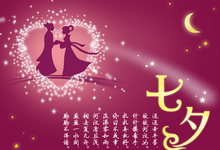

七夕节的来历与民间流传的牛郎与织女的故事有关，它最早的渊源可能在春秋战国时期，如《诗经・大东》：“跤彼织女，终日七襄。
{kind=link}
虽则七襄，不成服章；睨彼牵牛，不认服箱。”还有明代罗颀《物源》曰：“楚怀王初置七夕。”
不过那时候的七夕，是祭祀牵牛星、织女星，并无后面的故事。直到汉代，其细节才与牛郎织女的故事联系起来，并且正式成为属于妇女的节日。
如东汉应劭撰的《风俗诵》载：“织女七夕当渡河，使鹊为桥。”又如《西京杂记》载：“汉彩女常以七月七日穿七孔针于开襟楼，俱以习之。”
单身女性节

七夕节是中国的情人节.也是一个提倡男女相亲的节日。
民俗学家提出了自己的看法：七夕节首先是单身女子的节日。
西北师范大学古籍研究所教授赵魁夫认为，中国古代，七夕节应该是单身女子最快乐的一天，
即使是春节，不少女子都未必可以穿着新衣服去串门，家中一般使唤男子走亲访友，只有在七夕节，古代的单身女子可以着盛装，大大方方地走出去与姐妹们聚会、玩耍。
“七夕节最早是在西汉的宫廷里执行的，后来流散到民间。”
赵魁夫说，在西汉宫廷，宫女们不可能被提倡任意恋爱，所以七夕节最早的内涵主要是乞巧，表彰女子巧慧，女人们在这一天展示刺绣、针线等手艺绝活。
赵魁夫告诉记者，七夕节流传到民间以后，被加入了诸如爱情、家庭美满等愿望，甚至还加上了提倡读书、写文章的内涵，
比如刘义庆的《世说新语》中就提到七月七日人人晒书的片段。尽管七夕节各地风俗不同，从古至今一直没有变的就是以“乞求女子巧慧”为主。
从这个角度出发，赵魁夫认为，七夕节与西方的情人节有很大的不同。
“中国古代绝对不允许妇女和丈夫之外的情人有暧昧之情，这是儒家思想的一部分，不可能放到台面上来讲。”
赵魁夫说，因此有一种说法是，七夕节只应该是未婚女子的节日，望天下有情人终成眷属的意思。
华南理工大学新闻传播学院副教授、民俗学博士储冬爱也认为，七夕节更确切的说法应该是“未婚女性的节日”。
在近代，珠三角地区确实存在着一批“单身女性”，而她们也确实是乞巧节的主体。
但是，这批单身女性的性质有两种，一种是结婚之后不满安排的婚姻而回到娘家居住，并终生“不落夫家”；
另一种则是所谓的“自梳女”，这类女性一般是在十五六岁适婚时却不满封建包办婚姻，而对外宣告终生不嫁，并从此搬入“姑婆屋”居住。
这些女性是近代珠三角独有的一个群体，她们反抗封建婚姻，用自身的行动来追求独立自主的婚姻。